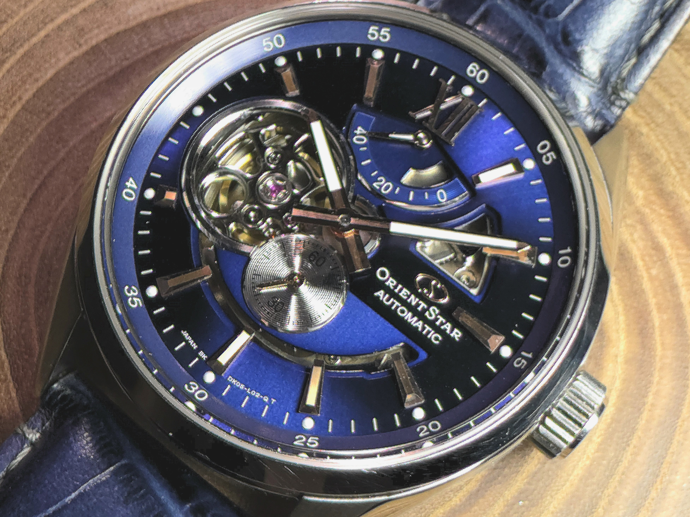
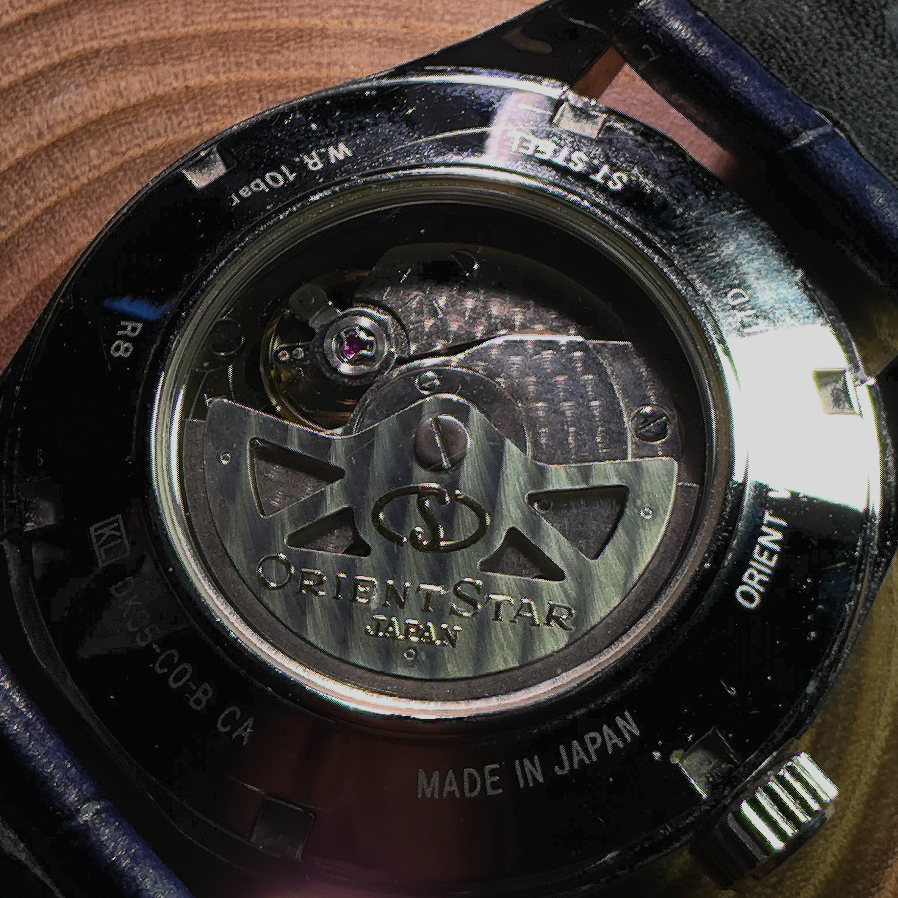
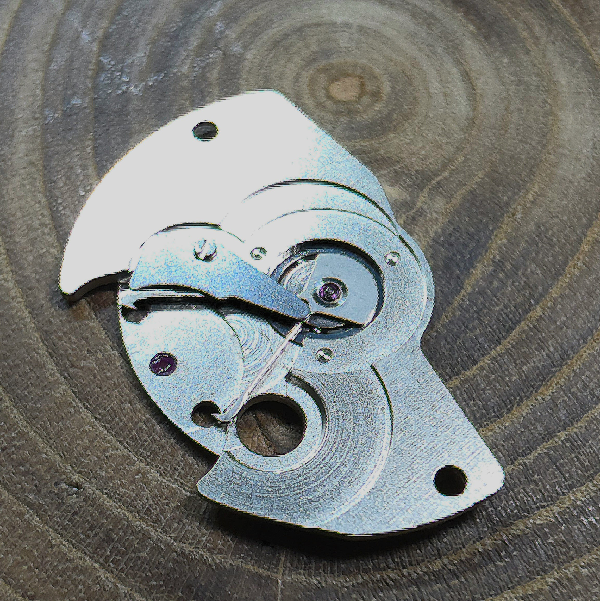
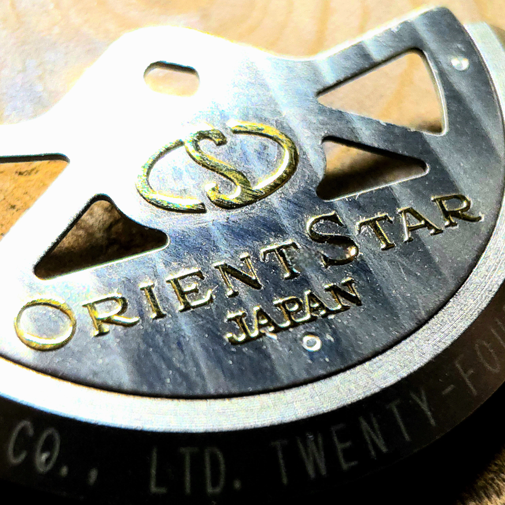

国産機械式の矜持。オリエントスター限定モデルの機構と意匠

今回アトリエで手掛けたのは、国産機械式時計の雄「ORIENT STAR（オリエントスター）」です。こちらはプレステージショップ限定として展開された特別なモデルで、深海を思わせる美しいブルーダイヤルが目を惹きます。
9時位置のオープンハートからはテンプの鼓動が覗き、12時位置には実用的なパワーリザーブインジケーターを配置。日本の時計製造における堅実さと美学が見事に調和した一本です。

シースルーバックから覗くのは、オリエントの自動巻き機構を支える精緻なムーブメント。しかし、この時計の本当の凄みは、分解を進めた先にある「見えない部分の設計」と「装飾への異常なまでの執念」にあります。

受け板を外すと姿を現すのが、このムーブメントの巻き上げ効率の要である「マジックレバー」方式の機構です。元々はセイコーが開発し、世界の時計業界に衝撃を与えたこの両方向巻き上げ機構。極めて少ないパーツ点数でありながら、ローターがどちらに回ってもゼンマイを巻き上げるという、日本の時計製造史に残る大発明がここに継承されています。

そして、技術者として最も驚かされたのがローター（回転錘）の装飾です。通常、このクラスのローターにロゴや文字を施す場合、「彫り込み（エングレービング）」や「プリント」で処理されるのが常識です。
しかし、マクロレンズで限界まで拡大して初めて分かる事実。なんとこの文字は、一つひとつが立体的にセッティングされた「アプライド方式」で実現されています。ローターという極めて薄いクリアランスしか許されない可動パーツに対して、あえて厚みの出るアプライドを採用する。見えない部分にこれほどのコストと技術を注ぎ込むメーカーの姿勢に、心からの敬意を抱かざるを得ません。